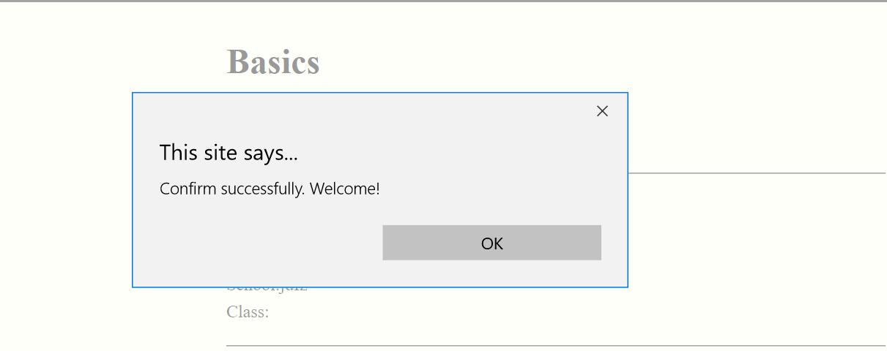
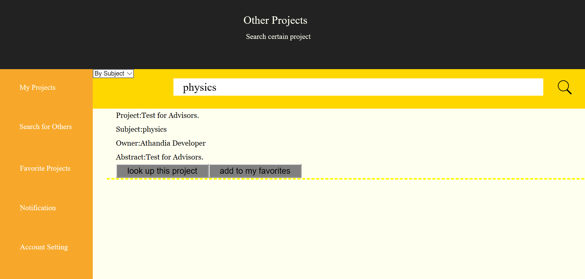

Guide for Advisors
As an online research platform, athandia provides a strong function for advisors to instantly instruct project owners. After a simple identity verification, advisors could access the right to seach for and look up others' projects. Athandia comment system on the project page is designed as a substitution of advisors' office. Here, advisors give their sharp advice and track the process of certain project.
Identity Verification
After logging in, click "Account Setting". Choose "advisors" as auth. Click "confirm".

Each advisor has his own id. Enter to verify. Click "check". If the page alert this, you have successfully verified your authority.
Once you have declare your auth, "Search for Others" and "Favourite Projects" would be available.
Search Projects
Click "Search for Others". Now all the projects available are listed on the board. However, you could navigate to certain one using the search bar. Choose the search method first and enter the key word of subjects or titles. Click search button.
Click "look up this project" to open certain project. Click "add to my favourites" to save as your favourite ones.